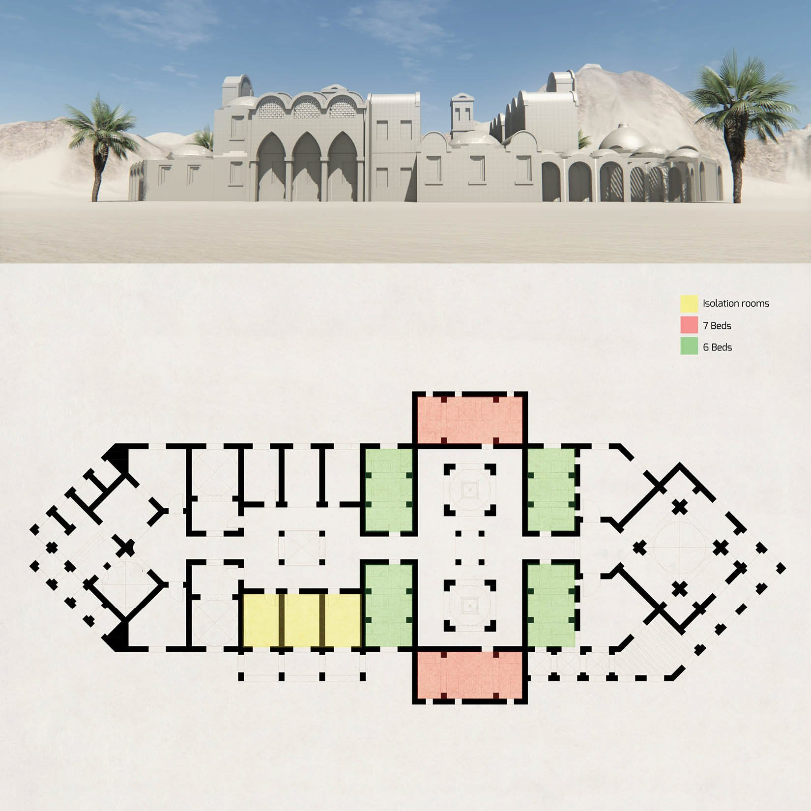

/ EARTH ARCHITECTURE
Detoxification Center,
Wadi El Natrun
An adobe rehabilitation centre for an Evangelical church complex on the Cairo–Alexandria desert road — an environmentally sound, human-oriented design whose domes, vaults and courtyards are drawn from the healing typology of the historic Bimaristan.

/ CONCEPT
A healing architecture drawn from the Bimaristan.
On the Alexandria–Cairo desert road sits a complex of the Evangelical church that houses a range of social activities alongside a rehabilitation centre for recovering addicts. The brief was to grow it into a full detoxification centre serving the 12-step programme — in an environmentally friendly building technique that also makes a genuinely human-oriented architecture.
Adobe techniques were used with dome and vault construction, on a design based on the old architectural typology of the Bimaristan — especially the Bimaristan of Aleppo in Syria — which used courtyards, water elements and music to relax patients and help accelerate their healing.
The programme gathers a doctor’s office, a visiting room, locked rooms, six-bed dorms and multi-use facilities, together with open spaces and libraries, to build a friendly, restorative atmosphere for the people it serves.
